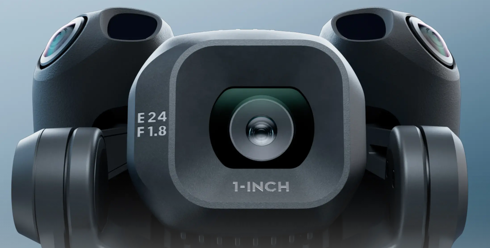

Blog
Actualités drone
& photogrammétrie.
Veille technique, retours terrain et analyses. Les sujets qui comptent pour les professionnels du drone d'inspection.
Juillet 2026 — Marché
Drone et expertise assurance IARD : l'imagerie technique au service des experts BTP
Dans le cadre de l'instruction des sinistres IARD (Incendie, Accidents, Risques Divers), la phase de constat visuel et de relevé d'état est décisive pour l'expert d'assurance. Qu'il s'agisse de dommages à l'ouvrage suite à une tempête, d'impacts de grêle, de désordres ou de recherches d'infiltrations en toiture, l'intervention par drone s'impose comme la solution de capture de données en zone d'accès complexe ou dangereuse.
Des livrables métriques pour étayer le rapport d'expertise
L'acquisition d'imagerie haute résolution par télépilote professionnel fournit aux cabinets d'expertise une scène figée et exploitable :
- Orthophotographie géoréférencée à haute résolution : vue d'ensemble métrique de la couverture et des façades pour l'inventaire exhaustif des dégâts matériels (tuiles déplacées, éléments de zinguerie arrachés, fissures).
- Modélisation 3D et nuages de points (LAS/LAZ) : numérisation de la structure permettant la prise de mesures de distances, de pentes et de surfaces directement sur poste informatique.
- Inspecter sans altérer la scène : réalisation de clichés haute définition sous tous les angles sans fouler une toiture fragilisée.
Sécurité, gain de temps et optimisation des coûts d'instruction
L'inspection de toiture et de bâtiment par vecteur aérien répond aux exigences opérationnelles des professionnels de l'assurance :
- Prévention du risque de chute : élimination du danger humain sur les structures endommagées par un incendie ou une catastrophe naturelle (CatNat).
- Réduction des frais annexes : suppression du besoin systématique de matériel lourd (nacelles, échafaudages) pour les relevés préliminaires.
- Réactivité post-sinistre : déploiement rapide sur le terrain pour capturer l'état des lieux avant travaux de conservation ou dégradation météorologique.
Le service d'inspection par drone fournit des données techniques et visuelles brutes ou traitées (orthophotos, modèles 3D, rapports photographiques). L'interprétation technique, le chiffrage et l'analyse des responsabilités restent de la compétence exclusive de l'expert ou du professionnel mandaté.
SKOPAIR : opérateur drone B2B en Île-de-France
Exploitant déclaré et certifié, SKOPAIR accompagne les experts d'assurance, commissaires de justice et gestionnaires de patrimoine dans la réalisation de constats visuels par drone dans les Yvelines (78), les Hauts-de-Seine (92) et sur l'ensemble de la région Île-de-France.
Juillet 2026 — Équipement
DJI Mini 5 Pro : pourquoi le drone C0 est l'allié stratégique des expertises d'assurance

Dans le secteur de l'expertise IARD et de la gestion de sinistres complexes, la vitesse d'intervention est primordiale. Si les drones lourds conservent leur utilité sur certains grands chantiers, le DJI Mini 5 Pro s'impose aujourd'hui comme un vecteur d'inspection privilégié pour les experts techniques et commissaires de justice.
Cadre réglementaire C0 / A1 : une réactivité opérationnelle maximale
Pesant moins de 250 grammes, le DJI Mini 5 Pro appartient à la catégorie C0 (Catégorie Ouverte A1). Cette classification européenne offre un avantage décisif sur le terrain :
- Agilité réglementaire : allègement significatif des contraintes administratives pré-vol par rapport aux catégories de drones plus lourds.
- Gestion des tiers : en catégorie A1, le survol occasionnel et non intentionnel de personnes isolées est toléré (hors rassemblements de personnes), réduisant considérablement les périmètres de sécurité en zone urbaine.
- Déploiement immédiat : capacité d'intervention ultra-rapide post-catastrophe naturelle (CatNat), permettant de figer l'état des lieux avant toute dégradation complémentaire de la toiture.
Du capteur HD à la modélisation 3D
Malgré son gabarit réduit, le Mini 5 Pro embarque un capteur optique haute résolution capable de fournir un niveau de détail précis pour le diagnostic visuel de couverture, de façade ou de zinguerie.
Les données brutes géoréférencées capturées sur le terrain sont directement intégrées dans notre chaîne de traitement technique :
- Traitement photogrammétrique : génération d'orthophotographies métriques à haute résolution et de nuages de points 3D exploitables.
- Relevés métriques : mesures de distances, surfaces et volumes exploitables directement dans les rapports d'expertise.
Une réponse sur mesure pour les réseaux d'expertise et assureurs
Cette flexibilité matérielle et réglementaire permet à SKOPAIR de répondre avec une grande réactivité aux sollicitations des principaux cabinets d'expertise (Stelliant, Saretec, Polyexpert, IXI Groupe) ainsi qu'aux exigences des grandes compagnies d'assurance (AXA, Covéa, Generali, GMF, MAIF).
Proposant un service d'imagerie technique sans accès physique en hauteur ni prise de risque humaine, SKOPAIR intervient rapidement dans les Yvelines (78), les Hauts-de-Seine (92) et sur l'ensemble de l'Île-de-France.